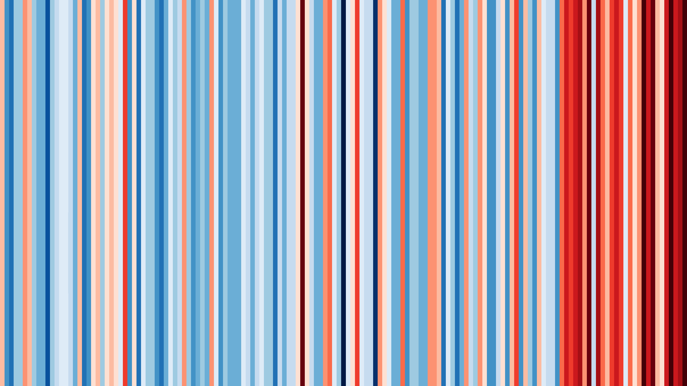
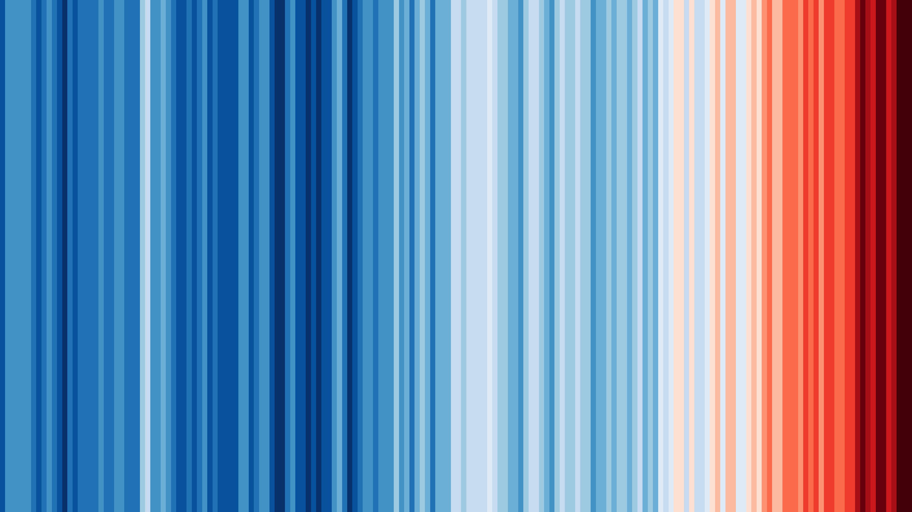
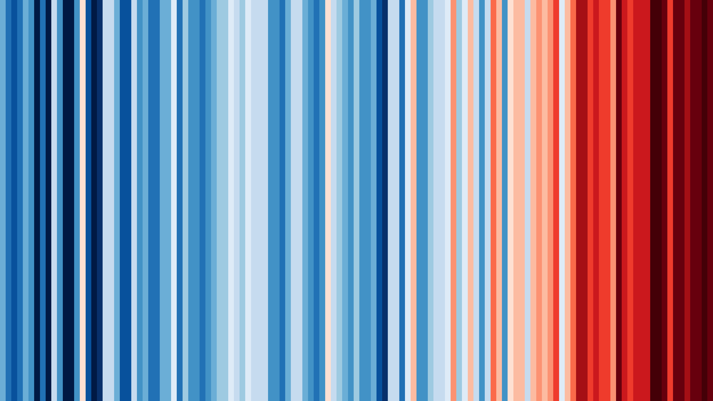
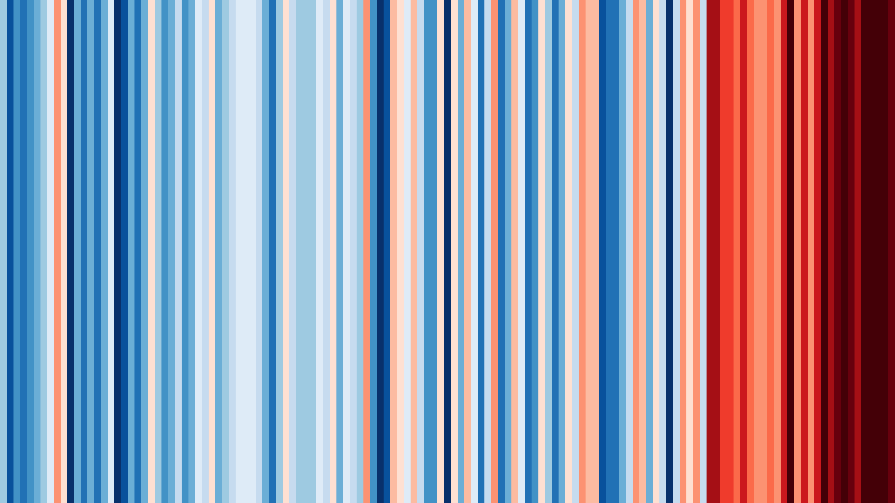

Climate Change Governance: Science, Data & Models
ENGG562 / ENV462 · Syed Babar Ali School of Science & Engineering, LUMS
- Science The physical basis of climate change, including the planet's energy balance, the carbon cycle, and the feedbacks that determine the magnitude of warming.
- Governance The policy architecture that translates scientific consensus into action, including international treaties, Nationally Determined Contributions, and carbon pricing.
- Data Analysis of real datasets on emissions, water stress, and agricultural yields, developing the skills required to interpret them correctly.
- Models The scenario tools and integrated assessment models used to evaluate the consequences of a policy choice before it is implemented.
Climate, water, energy, and food policy are conventionally taught as separate subjects, but they function as a single interconnected system, in which a disruption to one sector propagates through the others. This course is structured around that interdependence. Students begin with the physical foundations of climate science and progress to the modeling and data-analysis tools required to examine real cases in adaptation, agriculture, and infrastructure resilience.
Each week combines a lecture and assigned readings with an in-class case study — a scenario-design exercise, a policy intervention, or a sectoral analysis — addressing mitigation, adaptation, and resilience across the energy, water, and agriculture sectors. The course concludes in Week 14 with a group project in which students model a real policy problem using local and global datasets, presented and defended before the class.
Why This Course Matters
Observed Warming Trends
Warming patterns vary by region. In Pakistan, the past two decades have been the warmest in the observational record. The figure below places Pakistan's temperature record alongside three other regions for comparison: the direction of change is consistent across all four, though the rate of warming differs.




Observed Impacts
The following events illustrate the physical and economic consequences of these trends.
- 2010: Monsoon floods affected Pakistan, displacing approximately 20 million people and causing an estimated $10 billion in damage. Read more
- 2015: A heat wave in Karachi caused over a thousand deaths within a few days, and the power grid failed to meet demand. Read more
- 2022: Approximately one-third of Pakistan was affected by flooding, resulting in over 1,700 deaths; drought affected the same river basin the following year. Read more
- 2022: River levels across Europe fell low enough to strand barges and constrain power plant operations. Read more
- 2020–2023: The Horn of Africa experienced its most severe drought in four decades, leaving tens of millions with insufficient food and water. Read more
- 2023: Wildfire seasons in Canada and Greece set new records. Read more
Cross-Sectoral Impacts
The 2022 floods illustrate this interdependence. Nearly five million acres of cropland in Sindh province were inundated, and the province lost most of its expected cotton, rice, and sugarcane harvest for that year. This was simultaneously a water-management failure and an agricultural crisis, with downstream consequences for food prices in other regions. Treating water policy, energy policy, and agricultural policy as independent subjects obscures precisely this kind of cross-sectoral transmission.
The scale of these interdependencies is why current policy decisions carry long-term consequences. Infrastructure such as dams typically requires a decade to construct and remains in operation for a century; agricultural subsidies shape land-use patterns for a generation. Errors in the sequencing of these decisions constrain the options available to future policymakers.
Learning Outcomes
- Evaluate physical evidence, including IPCC assessment reports and observational data on temperature and emissions, to distinguish robust findings from preliminary or contested ones.
- Analyze the process by which climate policy is formulated, including NDCs, carbon pricing mechanisms, and water treaties, and identify points of institutional failure between ministries.
- Apply modeling tools, including the Scenario Explorer and integrated assessment models, to evaluate the consequences of alternative policy choices.
- Synthesize a complex scenario into a concise policy brief suitable for a decision-maker.
- Analyze energy, water, and food systems as an interconnected whole rather than as independent sectors.
Available Solutions
These challenges are not without established solutions. Solar generation is now cost-competitive with coal in most markets. Carbon and water pricing mechanisms are well understood. Several countries have restructured their power systems within a decade. The technical and economic tools required are largely available.
The remaining constraint is analytical capacity: practitioners able to reason across an entire system, rather than within a single sector, and translate that understanding into actionable policy. This course is designed to develop that capacity.
Instructor
Announcements
Watch the repository on GitHub to receive announcements by notification or email as they are posted.